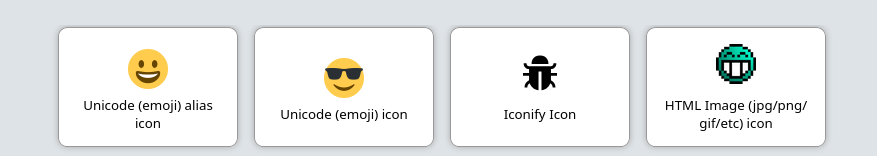

4.2. Icons
You can specify any HTML for an icon. It’s a popular choice to use Unicode icons because they are extremely fast to load and there are a lot of them.

Figure 1. Examples of icons in OliveTin
4.2.1. Unicode icons ("emoji")
For example on the here is a list of "Eomji" in unicode. If you find "Smiling face with sunglasses" you can click on it to see it’s "HTML-code". In OliveTin, you’d setup the icon like this;
actions:
- title: Unicode (emoji) icon
icon: "😎"
shell: echo "You are awesome"
4.2.2. Full HTML icons (<img src …)
You can also specify the full HTML for an image, like;
actions:
- title: HTML (jpg/png/etc) icon
icon: '<img src = "https://www.docker.com/sites/default/files/d8/2019-07/vertical-logo-monochromatic.png" width = "48px"/>'
shell: docker ps
|
Note
|
This full HTML thing is very customizable, but easier options will probably be added in the future as well. |